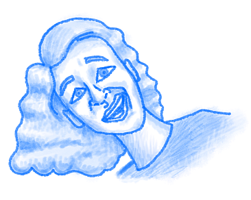

My Bio
I am a 19-year-old college student from Gill, Massachusetts. I live with my parents and my two dogs, Pippin and Ginger. I am studying software engineering at New England Institute of Technology. I am 6 feet and 2 inches tall, and everywhere I go everyone remarks that I am very tall, which I assure you has gotten old. You don't need to tell me, I'm very well aware of this fact.
I have lived in the same same house for my entire life. My house is relatively far out in the woods, as it is sandwiched between two nature conservancies, but it is also not far from town, which I find to be a nice balance. I enjoy nature, and am glad to have places to hike right nearby, but it would not be good to have to drive half an hour for groceries.
Schooling
- Gill Elementary School
- Great Falls Middle School
- Pioneer Valley Chinese Immersion Charter School
- Vermont Technical College (for two semesters)
Hobbies and Interests
- Art, both traditional and digital
- Video games, particularly Nintendo
- Music: anything from bluegrass to black metal, the weirder the better
- Movies: I love vintage horror, as well as musicals. Ask me about my love of The Rocky Horror Picture Show!